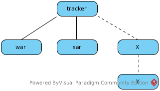
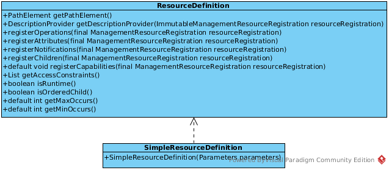

/subsystem=tracker
/subsystem=tracker/type=sar
/subsystem=tracker/type=war
/subsystem=tracker/X
/subsystem=tracker/X/YResourceDefinition 的实现
WildFly 的架构设计具有 Modular，Pluggable 的特点，多个 Subsystem 的集合形成一个 WildFly 服务器（不同 Subsystem 之间是相互独立的），而每一个 Subsystem 又是由多个管理命令（Management CLI）构成，Subsystem 中的所有管理命令成树状结构，树的 root 节点为 Subsystem 的名称，树中的一条有效路径代表一条 Management CLI，如下图

如上图，树中有五个节点，它对应 Management CLI 可以是
每一条 Management CLI 对应的树中的节点上必需注册一个 ResourceDefinition 的实现，该实现负责对应节点 Management CLI 的 操作，属性，子节点 等。

ResourceDefinition 实现必需遵循如下规则:
-
ResourceDefinition 实现类构造方法中必需初始化节点的路径，例如 root 节点对应的的路径为 "subsystem" ⇒ "tracker", 二级节点对应的的路径为 "type" ⇒ "*"
-
ResourceDefinition 实现类构造方法中必需初始化一个 ResourceDescriptionResolver，对应一个 LocalDescriptions.properties 文件，该文件中包含 Subsystem 中所有 操作，属性，节点 等的名称，参照附件-1
-
ResourceDefinition 实现类构造方法中需要指定相应的节点的
添加处理器和移除处理器，附件-2 为 ResourceDefinition 实现类构造方法中初始化节点的路径，ResourceDescriptionResolver，和添加处理器/移除处理器的示例 -
重写 registerOperations(), registerAttributes(), registerChildren() 添加相应的 操作，属性，子节点，参照附件-3
-
任意一个节点上所有 属性 都有相应的
读处理器和写处理器
规则3 和 规则5 中的所有 处理器 都实现 OperationStepHandler 接口，详细内容参照 OperationStepHandler 实现
附件-1
tracker=Acme Tracker subsystem
tracker.add=Operation Adds tracker subsystem
tracker.remove=Operation Removes tracker subsystem
tracker.type=Deployment type
tracker.type.add=Operation Adds tracker subsystem
tracker.type.remove=Operation Removes tracker subsystem
tracker.type.tick=Tick attribute
tracker.show-cool-deployments=Show cool deployments附件-2
Parameters parameters = new Parameters(SUBSYSTEM_PATH, getResourceDescriptionResolver(null));
parameters.setAddHandler(SubsystemAddHandler.INSTANCE)
.setRemoveHandler(SubsystemRemoveHandler.INSTANCE)
.setAddRestartLevel(OperationEntry.Flag.RESTART_NONE)
.setRemoveRestartLevel(OperationEntry.Flag.RESTART_RESOURCE_SERVICES)
.setDeprecationData(null)
.setCapabilities();
TrackerSubsystemDefinition resourceDefinition = new TrackerSubsystemDefinition(parameters);
private TrackerTypeDefinition() {
super(TYPE_PATH, TrackerExtension.getResourceDescriptionResolver(TYPE), TypeAddHandler.INSTANCE, TypeRemoveHandler.INSTANCE);
}-
SUBSYSTEM_PATH 为 root 节点的路径，TYPE_PATH 为二级节点 type 的路径
-
getResourceDescriptionResolver() 方法返回一个 ResourceDescriptionResolver
-
SubsystemAddHandler 和 TypeAddHandler 为
添加处理器，SubsystemRemoveHandler 和 TypeRemoveHandler 为移除处理器.
附件-3
@Override
public void registerOperations(ManagementResourceRegistration resourceRegistration) {
super.registerOperations(resourceRegistration);
resourceRegistration.registerOperationHandler(GenericSubsystemDescribeHandler.DEFINITION, GenericSubsystemDescribeHandler.INSTANCE);
}
@Override
public void registerChildren(ManagementResourceRegistration resourceRegistration) {
resourceRegistration.registerSubModel(TrackerTypeDefinition.INSTANCE);
}
@Override
public void registerAttributes(ManagementResourceRegistration resourceRegistration) {
resourceRegistration.registerReadWriteAttribute(SHOW_COOL_DEPLOYMENTS, TrackerShowCoolReadHandler.INSTANCE, TrackerShowCoolWriteHandler.INSTANCE);
}详细关于重写 registerOperations(), registerAttributes(), registerChildren() 的代码参照 TrackerSubsystemDefinition.java, TrackerTypeDefinition.java